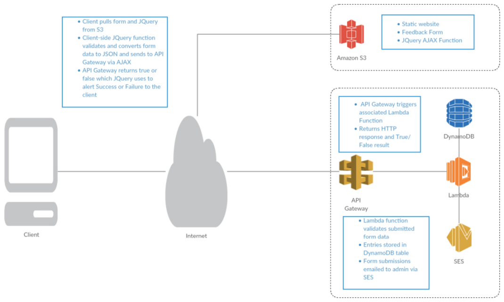

The walkthrough below provides the front end code for a serverless contact or feedback form as well as the necessary steps in AWS to setup and deploy the stack. Code for both the front and back end are on github:
https://github.com/kyle138/feedbackform.
{
"SENDER": "Feedback Processor ",
"RECEIVER": "youraddress@youremaildomain.com"
}
Bootstrap Jquery form source:
http://myprogrammingblog.com/2013/08/27/how-to-make-a-contact-form-with-bootstrap-3-jqueryphphtml5jqbootstrapvalidation/
S3 Static Website Hosting:
http://docs.aws.amazon.com/gettingstarted/latest/swh/website-hosting-intro.html
Lambda/DynamoDB/API Gateway walk through:
http://docs.aws.amazon.com/apigateway/latest/developerguide/getting-started.html